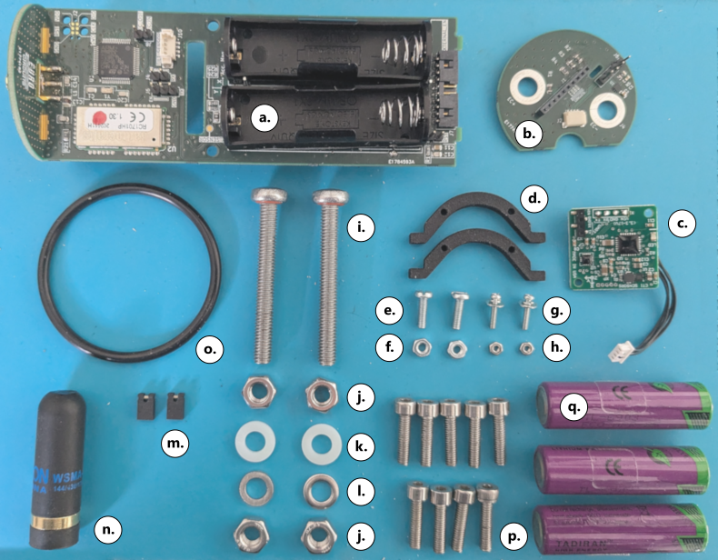
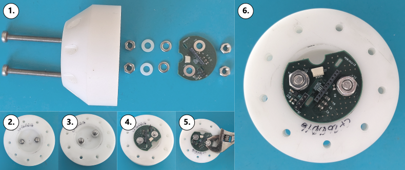
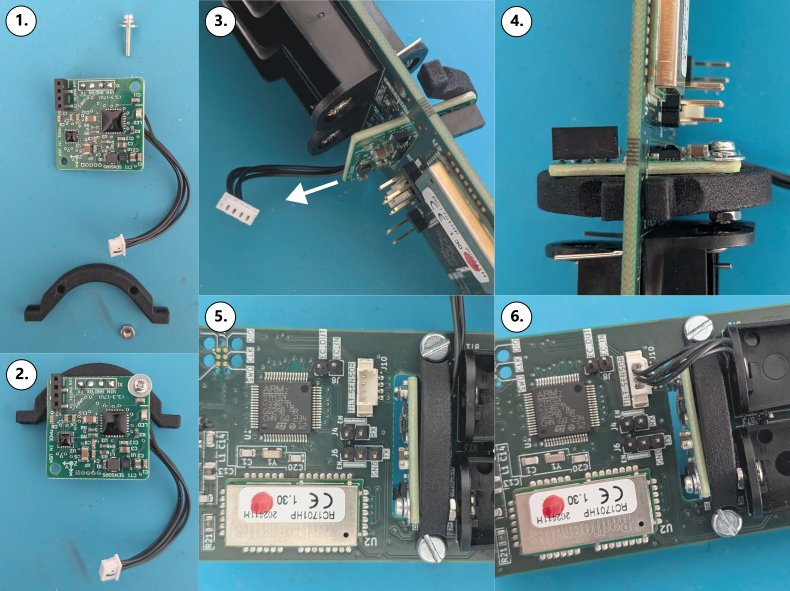
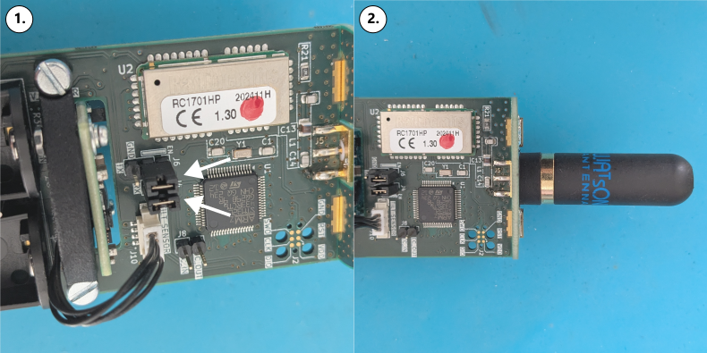
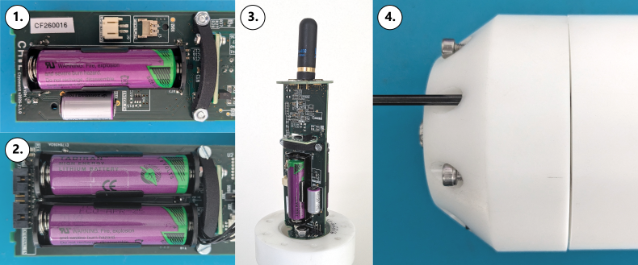

Assembly#
Components#

# |
Name |
Part Number |
Manufacturer |
|---|---|---|---|
Motherboard PCB |
CW26_motherboard and CW26_groundplane |
CHIL |
|
Sensorboard PCB |
CW26_sensorboard |
CHIL |
|
Tilt sensor |
TILT-05 |
CTi Sensors |
|
Tilt sensor bracket |
|||
M6 self sealing bolt |
Automotion components |
||
M6 nut |
|||
M6 nylon nut |
|||
M6 washer (?mm) |
|||
2.54mm jumper |
|||
Antenna |
WSMA |
Watson |
|
O-ring |
|||
M4 bolt sensor cap |
|||
Battery |
TL-6903 |
Tadiran |
Note
TODO: Add separate components image for pressure sensor variant.
Tools#
There are various tools required to correctly assembly a Cryoegg sensor. The minimum required set of tools are listed below with the part they are used to assembly.
Tool name |
Relevant parts |
|---|---|
M3 socket driver |
EC electrodes and PCB standoffs |
Flathead screwdriver |
PCB securing screws |
Phillips (crosshead) screwdriver |
EC electrodes |
3mm hex (Allen) key |
Upper casework screws |
Adjustable spanner |
EC electrodes |
Tweezers |
Tilt sensor bracket fixings |
Assembly steps#
1. Pressure sensor installation#
Note
TODO: add instructions for pressure sensor installation.
2. EC electrodes#

Fig. 1 Figure 2. Assembly instructions for Cryowurst sensorboard.#
Parts required: (i., j., k., l. b.)
Insert the two M6 EC electrode bolts [i] so that the head is on the outside (tapered side) of the sensor cap casework.
Secure each bolt in place with an M6 nut [j] using a screwdriver and adjustable spanner to apply sufficient torque to engage the o-ring in the self sealing screw.
Place a nylon spacer [k] followed by a steel washer [l] on the exposed section of the bolt.
Place the sensorboard PCB [b] on top of the steel washers and secure it with two more M6 nuts [j].
3. External tilt sensor (optional)#

Fig. 2 Figure 3. Assembly instructions for external CTi TILT-05 sensor.#
Parts required: (c., d., e., f., g., h.)
Place the smaller screw [g] through the TILT-05 PCB [c] and one of the supporting brackets [d] so that it matches the alignment shown in (REF). Secure in place with [h].
Push the connector, cable and free side of [c] through the central slot in the motherboard PCB [a] so that the supporting bracket is on the same side as the battery holders.
Use the second smaller screw [g] and nut [h] to secure the second bracket [d] on the opposite side of the sensor PCB. Make sure the connector cable exists from underneath the bracket.
Use the larger screw [e] and nut [f] to secure [c] in place.
Insert the connector into J10 (
TILT SENSOR) on the motherboard PCB.
4. Radio module#

Fig. 3 Figure 4. Assembly instructions for radio module parts.#
Parts required: (m.)
Install the 2.54mm headers [m] on jumpers
J4andJ6as shown in (REF).Place a small dab of Loctite [REF] on the thread of the antenna connector and then secure the antenna in place.
5. Install motherboard#

Fig. 4 Figure 5. Assembly instructions for batteries and casework.#
Insert the motherboard [a] vertically on to the 10-pin connector on the sensorboard [b].
Place the 1 to 3 of the Tadiran batteries [q] in the battery holders.
Place the 9 securing M4 bolts [p] into the slots on the sensor cap and secure it in place to main casework.